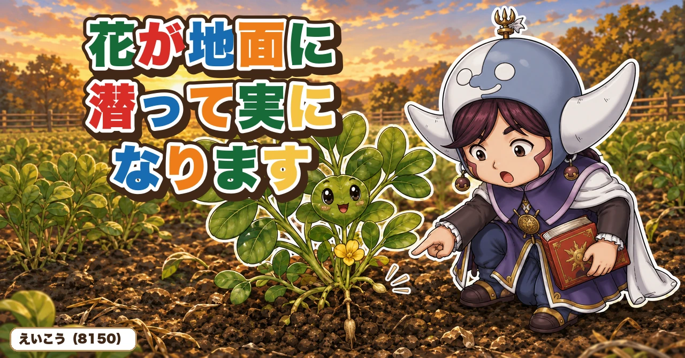
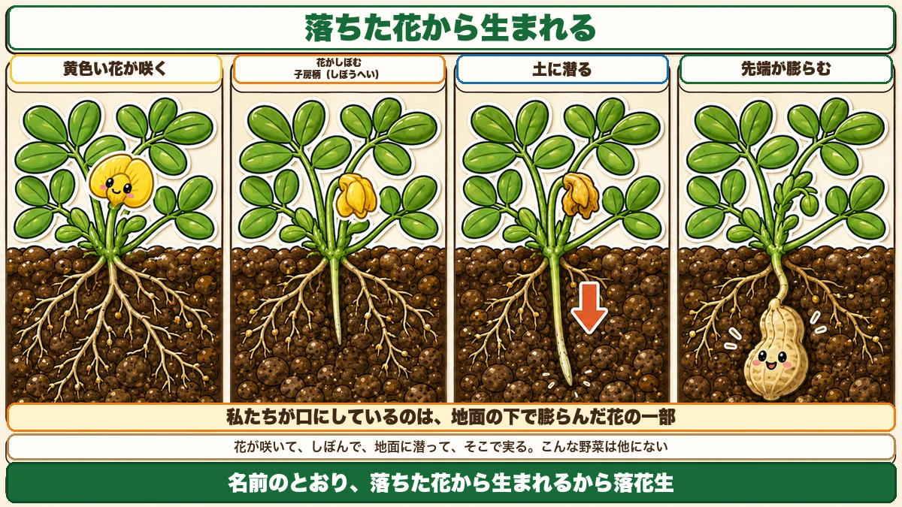
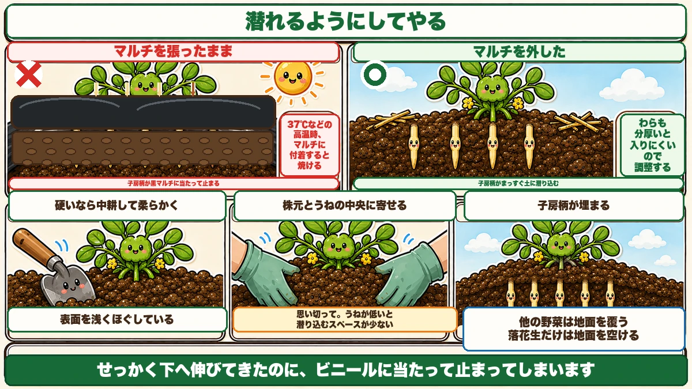
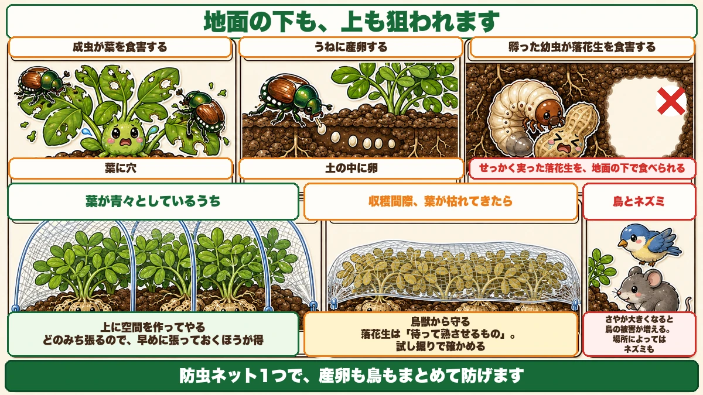

花が地面に潜って実になります🥜 だからマルチを外してください

🥜「花は咲いたのに、実がついていない」
🥜「落花生って、どうやって実がなるの？」
🥜「掘ってみたら、さやが小さかった」
どうも、8150（えいこう）です🌱 家庭菜園歴8年、理科の教員免許を持っていて、有機・無農薬で野菜を育てています。
落花生は、育て方が他のどの野菜とも違います。
先に、この記事でいちばん言いたいことを言っておきます。
★落花生は、花が地面に潜って実になります。
名前のとおりです。★「落ちた花から生まれる」から、落花生☺️
★★子房柄（しぼうへい）
黄色い花が咲きます
まず、花からお話しします。
★落花生の花は、黄色です。
マメ科らしい形の、小さな花が咲きます。この花が咲きはじめたら、そこから先が本番です。

★★花の付け根から、何かが出てきます
花が咲いて、しぼんだあと。
★花の付け根から、つるのようなものが出てきます。
これを★子房柄（しぼうへい）と言います。
- ★しぼんだ花から出てくる、芽のようなもの
- ★先端が尖っている
- ★下へ、下へと伸びていく
★そして、土に潜ります
この子房柄が、何をするか。
★土の中に潜り込んでいきます。
尖った先端で、土を突き刺すように入っていく。★植物が自分で地面に潜っていくんです。
★★先端が膨らんで、落花生になります
土に潜ったあと。
★その先端が、やがて膨らみます。
★そこにできるのが、落花生です。
つまり★口にしているのは、地面の下で膨らんだ花の一部です。
★花が咲いて、しぼんで、地面に潜って、そこで実る。★こんな野菜は、他になかなかありません。
★だから、対策が全部決まります
この仕組みが分かると、やることが決まります。
★★子房柄が、土の中にしっかり潜り込める環境を作る。
これが全部です。次から、具体的にお話しします。
①★水を切らさない
花が咲いたころが、勝負です
まず水やりです。
★花が咲いたころに水切れが起きると、困ったことになります。
- ★子房柄が太くならない
- ★さやも大きくならない
★せっかく潜っても、育ちません。
★夏場は、切らさないように
だから、こうしてください。
★夏のあいだ、水を切らさないようにする。
★雨が少ないようなら、たっぷり与えてください。
前に猛暑の記事で、「★水は通路にたっぷり」とお伝えしました。落花生の場合は、★株元も含めて、うね全体を湿らせておくイメージです。
★潜る先が乾いていたら、潜れません。
②★★マルチとわらを、外します
ここが、他の野菜と逆になります
これがいちばん独特なところです。
★マルチやわらを敷いている方は、外してください。

理由は、潜れないからです
当然といえば当然です。
★マルチが張ってあると、子房柄が土に潜り込めません。
せっかく下へ伸びてきたのに、ビニールに当たって止まってしまう。★そこで終わりです。
★★高温だと、焼けます
もうひとつ、こわい話があります。
★37℃などの高温のとき、子房柄がマルチに付着すると、焼けてしまう可能性があります。
前に何度もお伝えしたとおり、★黒マルチの表面は気温よりずっと熱くなります。
★そこに、やわらかい子房柄が触れる。★焼けます。
★マルチは、外したほうが安全です。
わらも、厚すぎるとだめ
わらを敷いている場合も同じです。
★分厚く敷いていると、子房柄が中に入っていきにくくなります。
★全部外す必要はありませんが、薄くするなど調整してください。
他の野菜との、使い分け
前に猛暑の記事で、「★マルチの上にわらを敷く」とお伝えしました。
★落花生だけは、逆です。
- 他の野菜 … 地面を覆って、地温と乾燥を防ぐ
- ★落花生 … ★地面を空けて、潜れるようにする
★「何を守りたいか」で、やることが逆になります。
③★土寄せをします
潜りやすくしてやる
子房柄が伸びてきたら、次の作業です。
★土寄せをして、子房柄を少し埋めてやります。
★うねが低いと、スペースがありません
理由があります。
★うねが低いと、潜り込むスペースが少ないんです。
子房柄が下へ伸びても、そこに十分な土がなければ、実が大きくなれません。
★土を足して、潜る場所を作ってやります。
★思い切って、寄せます
やり方です。
- ★株元に土を寄せる
- ★うねの中央部分にも寄せる
- ★茎が埋まるくらい、思い切って
★遠慮しないでください。★農家さんの中には、上から土をかぶせるようにやる方もいます。
★硬かったら、中耕してから
ひとつ注意です。
★うねの表面が硬い場合は、中耕して柔らかくしておいてください。
前に育苗の記事で、中耕の話をしました。★浅く耕して、土をほぐす作業です。
★硬い土には、子房柄は潜れません。★柔らかくしてから寄せます。
④★守る
★★コガネムシに注意
8月以降、気をつけたい虫がいます。
★コガネムシです。

前に春の虫の記事で、コガネムシの幼虫が根を食べる話をしました。★落花生では、もっと直接的な被害が出ます。
★幼虫が、落花生を食べます
こういう順番で被害が出ます。
- ★成虫が葉を食害する
- ★★うねに卵を産む
- ★孵った幼虫が、落花生を食害する
★せっかく実った落花生を、地面の下で食べられます。
★産卵の時期に注意してください。
★鳥とネズミも来ます
さやが大きくなってくると、別の相手が来ます。
- ★鳥の被害が増えます
- ★場所によっては、ネズミも
★おいしいものは、みんな知っています。
★防虫ネットで、まとめて防ぐ
対策は1つで足ります。
★上から防虫ネットを張ってください。
★コガネムシの産卵も、鳥も、これで防げます。
★時期で、張り方を変えます
張り方に工夫があります。
★葉が青々としているうち … ★ダンポールでアーチ状に張る
まだ株が育っているので、★上に空間を作ってやります。
★収穫間際、葉が枯れてきたら … ★ベタがけにする
もう伸びないので、★直接かけて鳥獣から守ります。
★同じネットを、時期で使い分けます。
★早めに張っておく
判断のヒントです。
★どのみち、いずれ張る必要があります。
だったら★コガネムシが気になる時点から、早めに張っておくほうが得です。
★あとから張るのは、株が大きくなっていて大変になります。
収穫のこと
★見えない野菜です
落花生は、実が地面の下にあります。
★じゃがいもと同じで、見えません。
前に収穫の記事で、こうお伝えしました。★収穫の適期には2種類ある。落花生は★「待って熟させるもの」です。
★試し掘りをします
じゃがいものときと同じです。
★1株だけ掘ってみて、さやの入り具合を確かめる。
早すぎるとスカスカ、遅すぎると殻から外れて土に残ります。★実物を見て決めるのがいちばん確実です。
潜れるようにする、それだけ
この記事の要点
- ★★落花生は、花が地面に潜って実になる。★「落ちた花から生まれる」から落花生
- ★花が咲いてしぼむと、付け根から★子房柄（しぼうへい）が出てくる
- ★先端が尖っていて、★土の中に潜り込む
- ★★その先端が膨らんで、落花生になる
- ★★だから「子房柄が土に潜り込める環境を作る」ことがすべて
- ★花が咲いたころに水切れすると、★子房柄が太くならず、さやも大きくならない
- ★夏場は水を切らさない。★潜る先が乾いていたら潜れない
- ★★マルチやわらを外す。★張ってあると子房柄が潜り込めない
- ★★37℃などの高温時、マルチに付着すると焼ける
- ★わらも分厚いと入りにくいので調整する
- ★他の野菜は地面を覆う。★落花生だけは地面を空ける
- ★子房柄が伸びてきたら、土寄せをして少し埋めてやる
- ★うねが低いと潜り込むスペースが少ない
- ★株元とうねの中央に、茎が埋まるくらい思い切って寄せる
- ★表面が硬いなら、中耕して柔らかくしてから
- ★★コガネムシは、葉を食害するだけでなく、うねに産卵する
- ★孵った幼虫が、地面の下で落花生を食害する
- ★さやが大きくなると鳥の被害が増える。★場所によってはネズミも
- ★防虫ネットで、産卵も鳥もまとめて防げる
- ★葉が青いうちはアーチ状、★枯れてきたらベタがけ
- ★どのみち張るので、早めに張っておくほうが得
- ★落花生は「待って熟させるもの」。★試し掘りで確かめる
全部やろうとしなくて大丈夫です。まずは株元をのぞいて、★花の付け根から下へ伸びているものがないか見てください。それが子房柄です🥜
次回は、里芋の話。土の中で、親から子へ増えていく野菜です🍠
ここまで読んでくださって、ありがとうございました。
貝殻石灰
落花生はカルシウムを多く使います。実の入りが変わります。
![[商品価格に関しましては、リンクが作成された時点と現時点で情報が変更されている場合がございます。]](https://hbb.afl.rakuten.co.jp/hgb/56d21b6a.c19127f6.56d21b6b.c5473e84/?me_id=1258048&item_id=10000067&pc=https%3A%2F%2Fthumbnail.image.rakuten.co.jp%2F%400_mall%2Fkaneashop%2Fcabinet%2F12084383%2F12419790%2Fimgrc0108924525.jpg%3F_ex%3D240x240&s=240x240&t=picttext "[商品価格に関しましては、リンクが作成された時点と現時点で情報が変更されている場合がございます。]")

移植ごて
子房柄が潜れるよう、株元の土をやわらかくほぐしておきます。

防虫ネット
まいたタネは鳥に狙われます。芽が出るまでかけておいてください。

収穫メッシュバッグ
掘り上げたあと、風を通したまま干せます。

あわせて読みたい